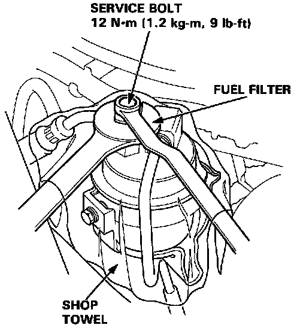
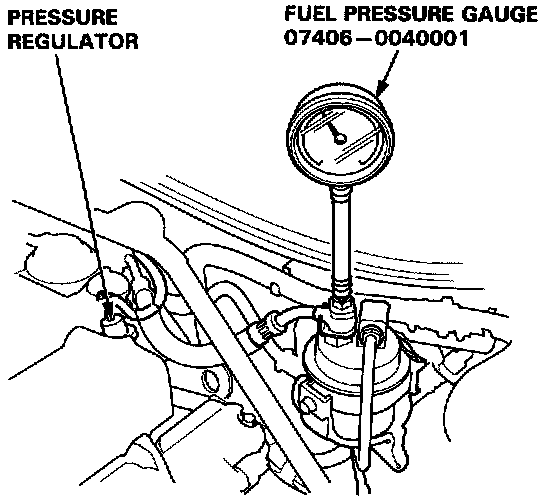

Fuel Pressure Test Port: Locations


NOTE:
- A fuel pressure gauge can be attached at the 6 mm service bolt hole.
- Always replace the washer between the service bolt and the special banjo bolt, whenever the service bolt is loosened to relieve or inspect fuel pressure.